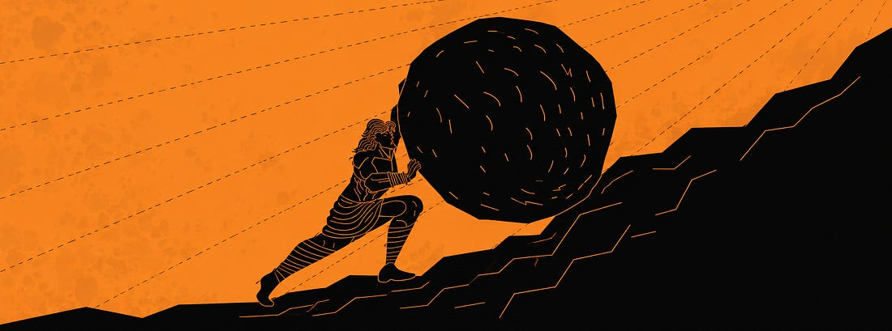
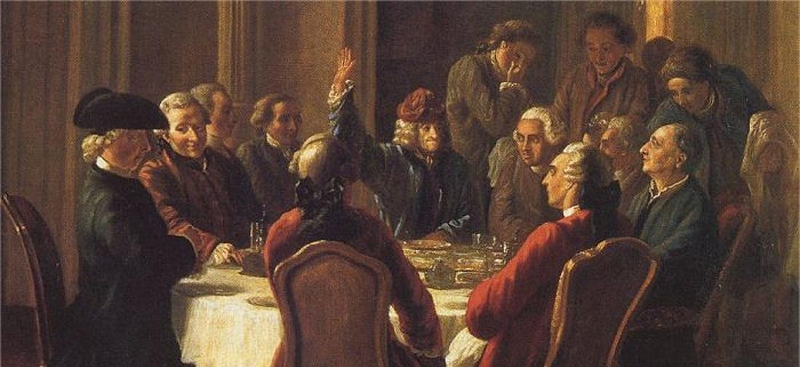

Introduction
Il y a une étude qui m’a frappé quand je l’ai découverte.
Bronnie Ware, infirmière en soins palliatifs australienne, a passé des années au chevet de personnes en fin de vie. Elle leur posait une question simple : qu’est-ce que vous regrettez ? Les réponses, après des centaines de conversations, convergeaient toujours vers les mêmes thèmes. Le premier regret, de loin le plus fréquent : “J’aurais voulu avoir le courage de vivre une vie fidèle à moi-même, et non la vie que les autres attendaient de moi.”
C’est un constat massif, documenté, répété sur des cohortes entières de gens en train de faire le bilan de leur existence. Et pourtant. On connaît cette étude. Elle circule, on la partage, on opine. Et on continue. La plupart des gens avancent dans leurs idées, dans leurs choix moraux, dans leur vision de la réussite sur la voie que l’on a tracée pour eux.
L'objectif de cet essai est de comprendre pourquoi et les dangers qu'il y a à sous-traiter sa pensée, sa morale ou sa vision d’une “vie réussie”.
Le poids qu'on refuse de porter
Nous sommes des êtres sociaux. Pendant des millénaires, être rejeté par la tribu signifiait mourir. Ce câblage oriente silencieusement des milliers de nos décisions. Il nous pousse à un certain mimétisme, vers ce qui est accepté, vers ce qui est conforme.
De plus, choisir la voie par défaut c’est aussi moins cher. Suivre une trace déjà tracée par d’autres ne demande aucun effort direct : on avance sans avoir à choisir. Mais ce “sans effort” est trompeur : le poids de la décision ne disparaît pas, il se déplace dans le temps. Il pèse plus tard, en différé, au moment où l’effet boule de neige est trop important…

Le courage des idées
Dans tout groupe social, certaines idées sont faciles à avoir. Elles ne froissent personne. Elles sont acceptées, attendues, elles font partie du cadre implicite. D’autres idées, en revanche, exposent. Tenir une position minoritaire dans un groupe d’amis, en famille, ou en public, c’est prendre un risque social réel.
Et face à ce risque, il est plus confortable d’adhérer. Pas par conviction mais par inertie, pour ne pas “faire de vagues”.
Platon a notamment mis en avant cette idée dans son concept de la doxa : l’opinion commune, le bruit du monde, par opposition à la connaissance réelle. La doxa ne se propage pas parce qu’elle est vraie. Elle se propage parce qu’elle est répétée. Et plus une idée est répétée, plus elle semble normale, légitime, évidente.
En 1784, Kant posait la question directement : “Qu’est-ce que les Lumières ?” Sa réponse: la sortie de l’homme de sa minorité intellectuelle. Et il nommait ce qui y fait obstacle non pas l’intelligence, mais le courage. “Sapere aude” : Aie le courage de te servir de ton propre entendement.

Ce courage est rare. Solomon Asch l’a mesuré en laboratoire dans les années 1950 : dans une expérience célèbre, des participants devaient comparer des lignes de longueurs évidentes. Quand des complices désignaient unanimement la mauvaise réponse, 75 % des participants finissaient par se ranger à l’avis du groupe contre l’évidence de leurs propres yeux.
Ce n’est pas de la stupidité. C’est de la biologie. Mais en avoir conscience change quelque chose. Cela invite à une forme d’humilité : sur ce que l’on pense savoir, sur les idées qu’on défend sans les avoir vraiment examinées, sur la différence entre une conviction réfléchie et une conviction héritée par osmose sociale.
Le danger du conformisme moral
La question morale, ce qui est bien, ce qui est mal, est peut-être le terrain le plus dangereux où s’exerce la voie par défaut.
En 1961, Hannah Arendt assiste au procès d’Adolf Eichmann à Jérusalem. Eichmann était l’un des principaux organisateurs de la déportation des Juifs d’Europe vers les camps d’extermination. Ce que découvre Arendt au tribunal la stupéfie. Elle s’attendait à un monstre. Elle trouve un homme banal : méthodique, obéissant, zélé et incapable de penser au-delà de sa fonction.
Il n’avait pas décidé que tuer des millions de personnes était une bonne chose. Il avait simplement exécuté des ordres. Il avait délégué la question morale à l’institution qui l’employait.
Arendt en tire une conclusion simple : “Le mal peut être banal.” Pas le produit d’une cruauté exceptionnelle, mais d’une absence ordinaire de pensée. Ce n’est pas le sadisme qui a rendu possible la Shoah : c’est le conformisme à grande échelle.
Ne pas choisir, c’est déjà choisir. Il n’existe pas de neutralité morale. Chaque inaction est un acte. Ceux qui ont “suivi les ordres” portent une responsabilité réelle précisément parce qu’ils ont renoncé à l’exercer.
Certaines choses sont universellement condamnables. Mais quand on sous-traite la question du bien et du mal à une institution, on perd sa souveraineté morale et l’histoire montre les conséquences terribles que peut avoir cette décision. A nouveau, c’est le manque de courage qui mène à ces situations.
La réussite par défaut
Il existe un modèle de réussite sociale. Il est visible, reconnaissable, mesurable. Une situation stable, un salaire respectable, une famille, une belle maison, des vacances... Ces éléments ne sont pas mauvais en soi.
Mais il y a une distinction que j’avais développée dans un Intracogito sur l’ambition et que je trouve essentielle ici :
Ce n’est pas parce qu’une chose est difficile à obtenir qu’elle a nécessairement de la valeur.
On peut passer sa vie à courir après des choses difficiles sans jamais se demander si ce sont les bonnes pour nous. Vouloir ce poste parce qu’il est inaccessible, vouloir ce mode de vie parce qu’il impressionne. C’est parfois une forme de lâcheté déguisée. Elle évite la vraie question : qu’est-ce que je veux vraiment ?
La voie des écoles de commerce
En école de commerce, j’ai vite compris à quel point il était facile de suivre une trajectoire sans avoir réellement décidé de la prendre. L’école valorise naturellement les débouchés prestigieux et les salaires de sortie élevés pour leur renommée ; les grands groupes cherchent à attirer le plus grand nombre de candidats possible. Et nous, étudiants, devons faire très tôt des choix qui peuvent structurer toute une carrière, parfois avec le poids d’un crédit contracté pour financer nos études.
Dans ce contexte, certaines voies comme le conseil ou la finance deviennent presque évidentes tant tout semble organisé pour nous y conduire. Pour ceux qui ont une réelle appétence pour ces métiers, c’est une formidable opportunité. Mais pour les autres, le danger est précisément de ne jamais s’être demandé ce qu’ils voulaient vraiment.
S’engager dans une vie professionnelle par défaut reste un choix, même lorsque l’on n’en mesure pas encore la portée. Et c’est parfois plusieurs années plus tard que cette décision se révèle pleinement, lorsque surgissent le mal-être au travail, l’épuisement ou la nécessité de remettre profondément en question une trajectoire.
Le piège anticonformiste
Il y a un danger à nommer qui guette précisément les gens qui ont compris tout ce qui précède.
Une fois conscients de la doxa, du conformisme moral, de la réussite programmée, il est tentant de tirer une conclusion symétrique : tout ce que pense la majorité est suspect, tout standard est un piège, toute institution est une manipulation. Et donc : faire l’inverse, systématiquement, c’est penser par soi-même.
Ce n’est pas penser par soi-même. C’est se construire contre quelque chose.
Quelqu’un qui s’appuie contre un mur. Si on enlève le mur, il tombe. Parce que sa posture dépend entièrement de ce contre quoi il se tient. L’anticonformisme systématique est cette posture, une identité construite par réaction, qui n’existe que si l’adversaire existe.
Le but n’est pas de rejeter les standards, mais de savoir pourquoi on les choisit ou pourquoi on les refuse. Une personne qui examine sa vie et conclut qu’elle veut la stabilité, la famille, la carrière classique et qui les choisit lucidement vit plus librement que celui qui les rejette “par principe”.
Conclusion
La voie par défaut mène à une vie par défaut. Et une vie par défaut, c’est une vie de cases cochées par des gens qui ne seront pas là, au moment où vous ferez, vous aussi, le bilan.
C’est tout le vertige de l’étude de Bronnie Ware. On n’a qu’une vie. Il n’existe pas de bouton “rejouer”. Certaines leçons ne peuvent tout simplement pas s’apprendre sur un lit de mort.
À bientôt pour de nouvelles réflexions
Elouan